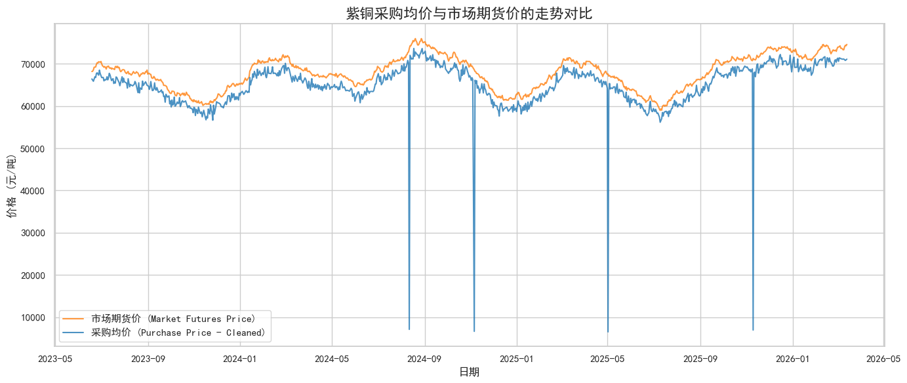
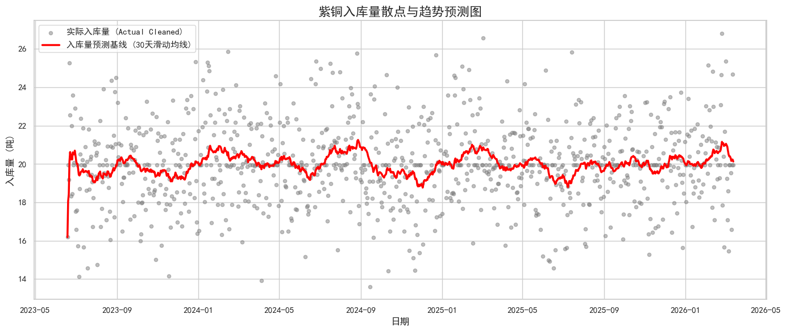

数据分析 · 算法应用 · AI 决策支持

图1：采购均价与市场期货价走势对比 直观展示数据清洗后，采购价格与市场大盘的高拟合度。

图2：入库量散点与趋势预测基线 通过滑动均线平滑离散波动，清晰呈现入库量的周期性趋势。
传统回收台账缺失率达 15% 以上，人为录入错误频发，难以做价格预判。
完成 1000天量级 非结构化台账的清洗（采用均值/线性插值/前向填充）。
构建基础时间序列趋势基线，辅助平滑异常波动，为公司提供采购定价与库存备货的量化参考依据。
发现纯算法清洗对“逻辑性人为错漏”（如品类张冠李戴）存在局限，从而主动推动了后续 AI自动化视觉核验工具 的立项与开发。
输入当前市场情境，系统结合历史台账数据特征，生成采购备货建议。